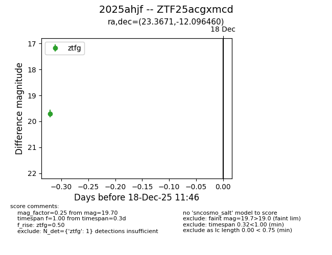
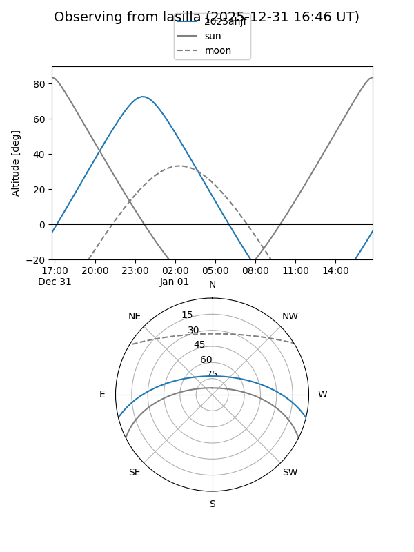
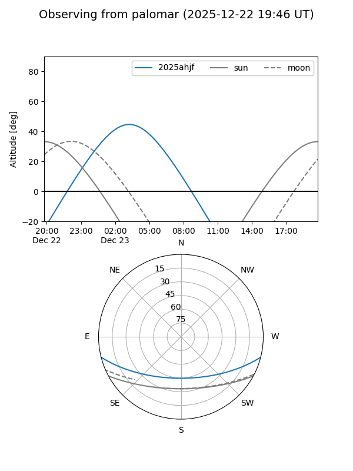
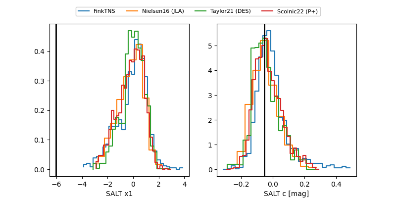

2025ahjf
Target 2025ahjf at 2025-12-24 16:17
Aliases and brokers:
FINK: fink-portal.org/ZTF25acgxmcd
Lasair: lasair-ztf.lsst.ac.uk/objects/ZTF25acgxmcd
ALeRCE: alerce.online/object/ZTF25acgxmcd
TNS: wis-tns.org/object/2025ahjf
YSE: ziggy.ucolick.org/yse/transient_detail/2025ahjf
alt names
ZTF25acgxmcd (ztf,fink_ztf)
2025ahjf (tns,yse)
Coordinates:
equatorial (ra, dec) = 23.3671,-12.09646
equatorial (HMS+DMS) = 01:33:28.10,-12:05:47.26
galactic (l, b) = (158.2284,-72.02458)
Flags:
Photometry:
last ztfg=19.58, ztfr=19.60
2 ztfg, 1 ztfr detections
Lightcurve

Visibility


Additional plots
